Table of Contents
Random Ideas
Pill Dispenser
Simple design would be similar to Pez dispenser, yet be adjustable for different pill sizes. Problem is similar to Hopper (feeder) design and ejection method for paint ball guns, gumball machines, coin dispensers, SMT_placement_equipment (pick and place machine), etc.
{kind=link}
Refilling
Pill Singulation is the key word here. How do you make only one pill come out?
- Good review article might be Singulation—A Problem in Design (ASME) and Three dimensional adjustable cavity for flexible singulation of multiple medications in an automated medication dispenser (IEEE). Check if PSU has access before going.
| Crank, sets torque and allows hand to fit | Spring/Rubber Band to tension wheel? | Wheel Design 1 (Vertical), make adjustable size? | Wheel Design 2 (Vertical), different) | Wheel Design 3 | Wheel Arrestor / Latch Mechanism |
| 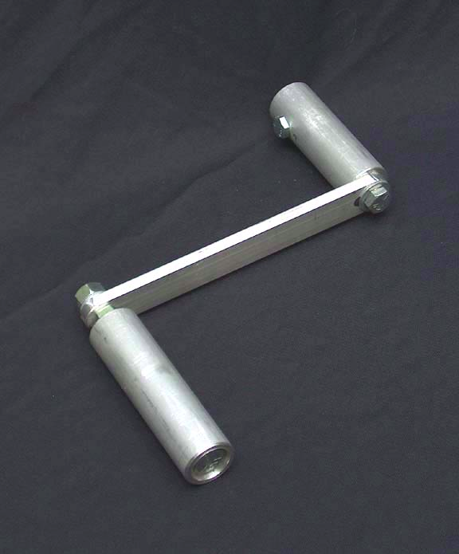 | 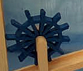 | (HORIZONTAL IS PROBABLY BETTER TO REDUCE CLOGGING ) | Not sure if really needed though |
{kind=link}
{kind=link}
If pills are stuck vertical in Pez dispenser part, then shake it around (360) / vibrate at a fast?? rate. (Hitting it repeatedly probably won't work) The pills won't be able to stay in upright position because sides are small compared to large faces and it will want to fall flat onto its face.
| ScriptPro | old, probably doesn't work | Innovation Associates, commercial automatic feeding. | Kirby Lester |
| 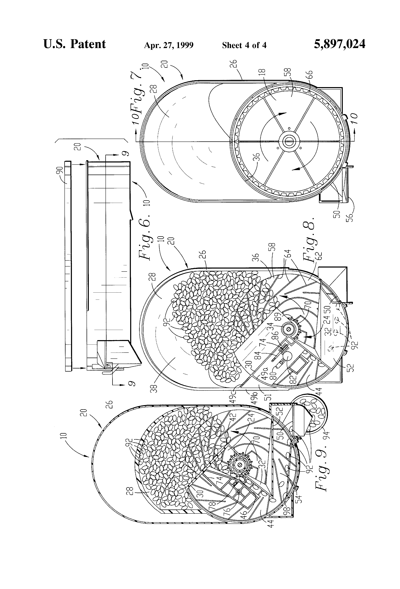 \ A video of slick adjustment system | 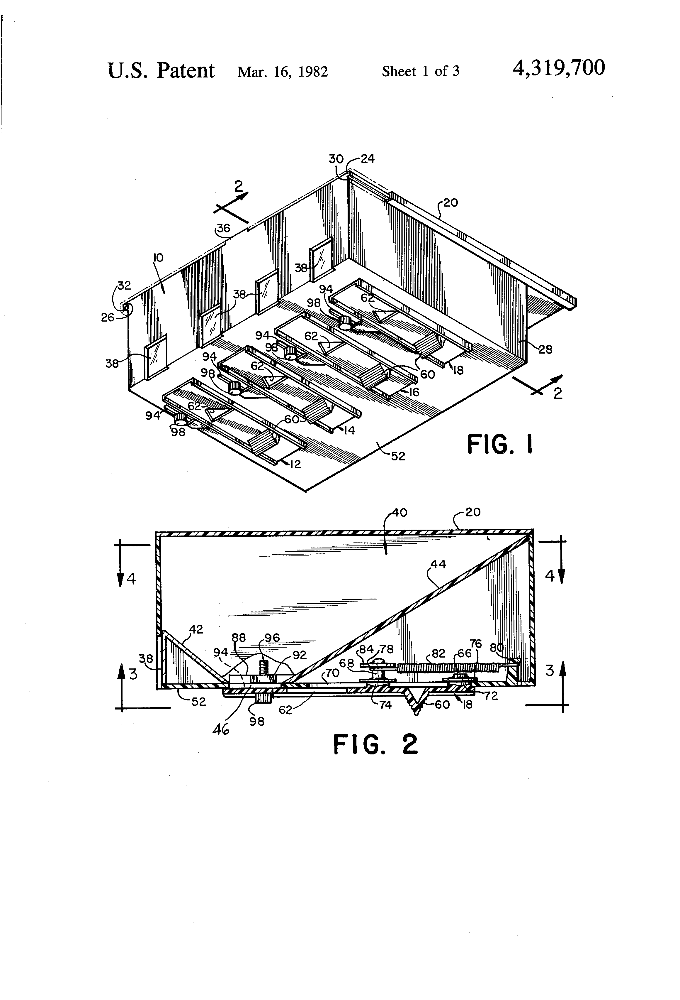 | 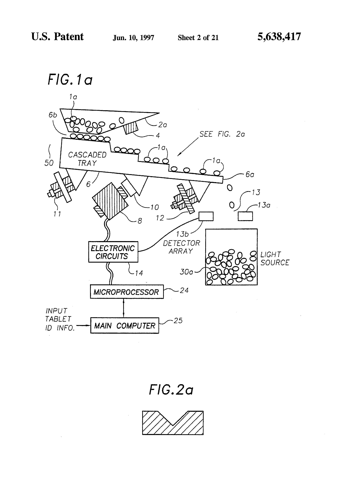 | 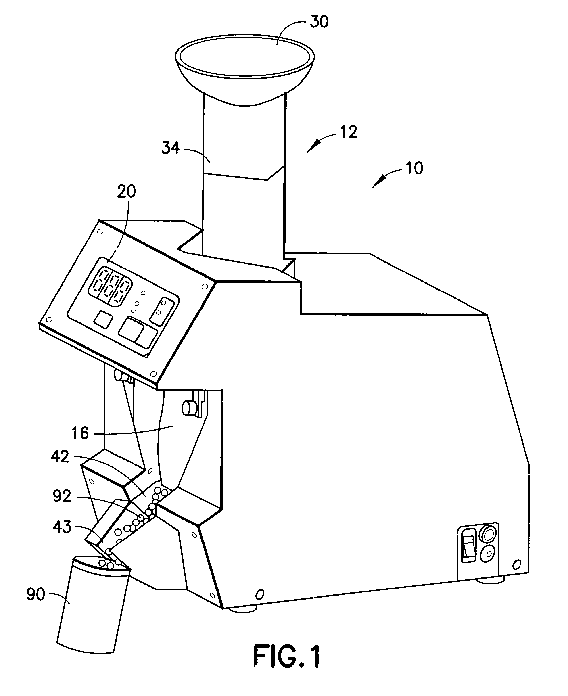 |
YouTube Link! https://www.youtube.com/watch?v=IAaY08W9LbM
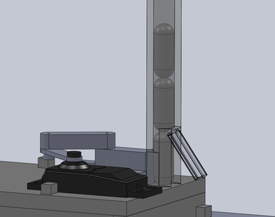, a kicker.
{kind=link}
Interesting related designs
Testing implementation. I think I just need to try it out manually.
- Another option for simulating is Sketchy Physics and Sketchup and do hinge design, or Solidworks Motion Design
Prototyping
Spray adhesive typically used is Super 77 by 3M. Also, Mr. Morley recommended buying the Octave Afinia 3D for his next 3D printer. The resolution on those guys is incredible!
Food Going Bad
Peanut Butter
Summary from great article at LiveScience
- High fat content means low moisture content (~2%), which is similar to other “dry” foods on the shelf that stay good for a long time. Bacteria/fungi need at least ??? and certain temperature to grow.
- Rancid smelling PB isn't actually bad for you, it just smells bad.
Other "preservatives"
Sugar (and probably salt) “tightly” binds with water, making it impossible for mold/fungi to grow as they can't rip apart the water bond. source
The Truth Project
Presented by Focus on the Family, watching at Village Baptist Church, at met a cool guy named Ron that seems to have his head screwed on straight.
Many criticisms under The Truth Project
Generate Arbitrary Standing Waves
Eventual Math StackOverflow Question if I need it
I know I can solve for the input of a system given the desired output and the system response with a number of different methods. However, because of the inherent system response time to the input, I really only know/care about the output after time t, and "don't care" about what happens before time t. What is this topic called? I will happily read other sources about it. Application: I am trying to find the input for making an arbitrary "standing" wave using the wave equation as my system, but don't care about the output before time t.
The Powder Toy is a great toolkit for fast drawing of interactive things on the PC.
1D wave equation, derivation of standing wave. Page 85 of this document
This is a classic partial differential equation (multi-dimensional) problem. Solving the heat spreading along a metal pipe using Fourier Transform.
Combination of Wave_equation, Vibrations_of_a_circular_membrane, and Separation_of_variables to solve them. Nice visualization at Falstad.com
Medium
Some guy suggested using Microbeads for his chladni table, but water / non-newtonian fluid might give more interesting results.
Nick Rock said that people have done it using ferrofluids and air / charged coils. Might help…
Construction
??? Prove using theory for now. Use a speaker, but maybe better results with lots of individual speakers.
Make Magazine recommends winding your own coil so you don't burn out your wire. Also, try and find an amplifier somewhere too…
BRAINS!
Backyard Brains Experiments, excellent experimental design.
- Propogation speed of electrical signal is 20-80 m/s, and 1 msec to propogate across a synapse. Patellar_reflex (knee jerk) is 50msec typical, which for ~1.5 meters corresponds to 30 m/s propogation speed since there's only 1 synapse apparently!
- Other reactions measured in reaction time experiment using a falling ruler and various alerting techniques:
- “The average reaction time for humans is 0.25 seconds to a visual stimulus, 0.17 for an audio stimulus, and 0.15 seconds for a touch stimulus.”
- Propogation speed from other excellent experiment comparing Nerve speed
- So that's why smaller things react faster (and we need the video slowed down??)? YouTube Link! https://www.youtube.com/watch?v=dOyc98tV5kA
- But the smaller fly is too dumb to avoid it?!?!
- Muscle Fatigue experiment, documented in Exercise page
They also talk about transistors and amplifier design
Life Simulation (high school level)
Occupation
Maybe have a competitive market for trades / programming, but a artificially limited market for doctors? And make it 10 years of school and school loans for it as opposed to very few for a trade.
Budgeting
How to make the cool expensive stuff really cool, desirable?
Investing
The classroom should be its own stock market, none of this pull from the real market stuff.
- The reason is to simulate bubbles and bursts. Not sure how to help this behavior along though.
- For the underlying earnings values, maybe go with a die with 6 being -6 and the others being various levels of +(1,2,3,4,5)? Maybe this is too much, as the stock market game had enough variation (random walk) and it had a definite floor.
Science Demos Experiment Science Fair Ideas
What is the point? What is the goal?
NOT
- If you can't do this, you can't be an engineer.
- Only engineers get to do cool things. Failure if something else
YES
- Problem solving is useful in everything, even as mundane as fixing your water heater or trying to figure out why you feel depressed.
- Remove variables one at a time to eliminate their effect
- Developing a high-level prototype-level sense of how things should work. Formulas (surprisingly!) give you the answer instantly, but working in the “real world” often needs less exact answers and more the right direction to go. but computing exact answers often isn't needed because you can't measure your inputs exactly.
What about doing an engineering day demo in chemistry class, have students work on different ones and present at the end…
- Car condensation
- Using waste heat from servers for hot showers
- How does fog/dew form?
- My water heater is broken! It outputs hot water, but then it becomes lukewarm very quickly… (there maybe some different ones too, but this is a good one).
- Really useful thinking for fixing a car. Work to develop a mental model then test it out.
- Show demo of proper operation using sealed spice jar and straws w/ ring of hot glue on the top. Then give them hose and their own spice jar to go at it? You'll learn a lot at the hands-on.
- Water heater + that funny inverse trap on top of it for keep hot water in water heater and not going up into the house. Although that might be preferable as an alternate heating method…Or is heating air hotter better? :P
- Our goal is to melt an ice cube the fastest. Or… is it “what is colder” ala Veritasium on Misconceptions about Temperature YouTube Link! https://www.youtube.com/watch?v=vqDbMEdLiCs. what material will be best? Options can include from aluminum, stainless steel, glass, and plastic. Maybe copper if I can find a cool bowl on craigslist.
- Funnily enough, the people are right in the video, aluminum does feel colder, and it even is colder in the region of their hands compared to the plastic.
- A problem that often comes up though, is that it's hard to run a full experiment…The problem is, we only have a limited number of ice cubes tonight, so you running the experiment is pretty expensive, so we can only “ice cubes” are kind of expensive, we can only run the full experiment once! You can do other experiments before-hand though…
- For quick thinking adults, they get one extra option, a glass with some room-temperature water in it. No stirring!

- Not sure how much to put in yet, but thermal conductivity of water is surprisingly little. So it'd be from the density of the water changing and sinking down, getting replaced with room-temperature water again.
- An alternate experiment, not sure where it'd fit in yet, is to cool down something a phase change material that visibly changes phase at room temperature. I tried using:
- Candle wax (doesn't heat up in microwave well + cools too quickly even in warm glass bowl…low thermal mass?)
- Margarine (goes crazy in microwave, smells oily, and … still is semi-opaque)
- COCONUT OIL! Extra virgin?? The costco stuff we have is solid at room temperature and melts to clear in the microwave and barely smells. Awesome stuff.
- Other helpful things:
- IR thermometer
- Cafeteria tray to contain spills
- How “cold” is an aluminum block compared to a plastic block? Yet, it will melt ice way faster?!?!
- Better question (from Dad) is “which of these materials do you think will melt ice the fastest?”. After they give you some answers, have them justify it if needed. Then, ask them “Now feel the materials, does that change your mind?”. Then, do the final experiment.
- Trying to make greens taste good.
- Apple sauce surprisingly doesn't help! I wonder why…
- What about orange juice?
- What about water? How much? Surprisingly, it goes from
TODO for Minter Bridge demo
To buy
- Buy extra IR thermometer at Harbor Freight
- Borrow CPU heat sink from work?
- Have dad buy copper bowl! (craigslist)? Change the least number of variables, although that doesn't end up mattering in this case. There are some copper mugs (with stone lining?!?! on CL and copper serving plate too)
- Call walgreens / hospital in hillsboro for several 10ml, ideally 20ml syringes.
- Coloring/ink/food coloring?
To bring
- Ice cubes in a small thermal lunch box thingy
- Printed sign? Or just laptop screens
- Jug/jar of water, water heater thingy, extension cord? Or just try to get a spot by a wall.
Water Heater
Heating inconsistently. Mainly first shower of the day is at best luke warm. After that point it warms up.
- Seems to be “normal” result of a poorly designed system.
- Turn on water early to insert more cold water and turn heater on. But that wastes water and won't it not heat all the water?
- Start using the shower and feel it warm up.
- Call a plumber… or Domes. Maybe they can suggest something like continuous hot water circulation or … idk.
Tankless Heater
- Not necessarily cheaper to use in long run than tanked (particularly when your gas inlet isn't big enough). http://www.greenbuildingadvisor.com/blogs/dept/musings/are-tankless-water-heaters-waste-money
- But they do heat up water fast!
Potential causes from around the internet: Better to try the library next time…
- Dip tube letting hot water mix with cold…?
- Faulty tempering valve.
- This is a little gadget that sits outside the heater, whose job is to mix a controlled amount of cold water with the hot water from the heater before it's delivered to the rest of the plumbing. The intent is to limit the maximum temperature you can get from any hot tap to a scalding-safe 50°C while still allowing hot water to be stored at a bacteria-unfriendly 65°C+.Cool!
- Water heater shuts off in high humidity? to prevent lots of gas / CO2 buildup in your space.
PTFE = Teflon. Grandpa recommends Oatey Great White Pipe Joint Compound to allow teflon tape to spin a little farther / tighter. It's not meant to seize and prevent you from opening it up again.
Tools
- Peltier cooler/heater + clear tubing + aluminum water cooling blocks is a cool visual of water density as temperatures cool off in house piping and water heater showing, but might be overkill and too much work to maintain vs. hot water and ice/cold water.
- Show fluid flow by using cut up pieces of high-density polyethylene? (.95-.97 g / c3, water is 1.0) (most plastic containers including milk jugs)
- Other densities are at Microdensities of plastic
- Refrigerator condenser or ice for making cold.
- Compressor
- Bunsen burner for making hot, or … electric kettle or hot plate.
- Piezo for making mist…not sure why you'd need it though
- Some way to tell temperatures of water and air
- I don't think we need to know pressure, although for safety it'd be good
- Thermochromic ink? Need to combine various ones to get full spectrum. Ideally blue = cold, clear = lukewarm, red = hot? How do the stick-on things do it?
Also can use IR thermometer or FLIR thermal camera (80×80 resolution)(not as fun to tell gradient / motion with / color inside of outer layer).
Hot Chair Experiment
Why does everyone else's chair seem warm when we sit in it, but not our own?
- Test with having blindfolded person stand up and randomize chair to sit in
Water Heater
What is optimal control for water heater problem? (referring to when to turn on heater, how does the water cool, etc)
- Where should we add the cold water? How much does it matter?
- What happens to the colors when I add hot water at the bottom?
- What about the “peak” curve in the hot water pipe before it goes up into the house? Is that enough to prevent motion of hot water up into the house? Does it matter?
Bonus:
- What will happen if I add an ice cube?
Random cool counter-intuitive stuff…is that an end? Maybe no one thinks that, but they sure are cool, similar to comedy shows or … idk. But what I really want them to get comfortable with is the ugh of the drudgery. Think “why am I doing this anyways” and keep the end in mind.
To put heat in the bottom without cracking glass / melting plastic, heat water in pancake cooker and set the jar in the water.
How to heat a house
Not really a science fair idea, but interesting nonetheless. Electric resistance heaters are “100%” efficient, but they're usually the least efficient form of heating. source that I'm pulling from
- Electricity usually??? comes from gas, coal, or other things. You're better off burning the oil directly for the heat, as the efficiency of turning it to electricity is … 30%?
- Heat pumps are way more efficient, like 300%?! They work in reverse of an air conditioner, “pulling” heat in from outside air and releasing it inside. Kinda cool…
Server Farm / Body Waste Heat
How would you efficiently use / dissipate the heat generated by a server farm? In particular, what's the most efficient way to provide hot (130 F) showers to people when your air temperature in the server farm only increases by say, 10 degrees F?
Try it yourself first before Googling!
My notes:
- Water is incompressible, but air is compressible! So, make like a refridgerator/air conditioner / freezer and compress the air to heat it up, then run it through heat sink to heat up water pipe flowing by (add fan for faster transfer of heat). Then, decompress the air and you'll either make cold sink water and/or cool down your hot air from the server farm.
Water heating from sun/lamp is striated??
I remember swimming in Hawaii and there was a definite layer of warm water on top (about .5m?) and much colder water below. And, it wasn't gradual, it was like BAM cold. 
I think it's from the limited penetration depth of the IR of the light along with warmer water being more buoyant and non-mixing according to water heater experiment.
Cloud Phenomena
When water will condense into tiny droplets is governed by the Clausius Clapeyron Relation. water vapor to rain equation
Use a heat lamp on a easily evaporatable surface. Like the sun on pavement, the clouds don't seem to move much!
- Ohhh…so you'll have fog ready to go…ok.?
Bottoms are at Same Height
It's because that's where relative humidity is 100%. Any lower and the cloud droplets evaporate
Ripples
Same as Washboard_effect, I think. Cool Video from MIT students! 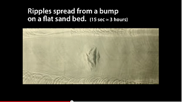
A main study, with a cool movie demo and arXiv preprint. 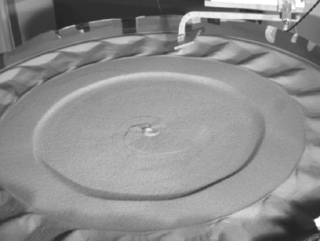
Implementation in MATLAB/C!. (github)
What are some interesting weather phenomenon?
- Use Gigapan Timelapse/Time Machine (best viewed in Chrome).
- Doppler Radar data (need to cache), latest loop, DbZ interpretation on Wikipedia, Temperature/humidity data from NOAA. Should be interesting.
{kind=link}
Cloud/Rain Machine
- Use a humidifier! (ultrasonic) YouTube Link! https://www.youtube.com/watch?v=MiL3OXvKf7E
How to cool air to condense vapor
- Dry ice (very fast and rapid though…)
- Decrease pressure (some use bike pump, squeezing bottle, or latex balloon to increase pressure and reduce heat to room temperature, then by decreasing pressure, the air is cooled quickly until it goes away by warming up).
- Same concept as a refrigerator or freezer!
- Use peltier cooler
Other people do implementations using ethyl alcohol or propanol? (for detecting muons, etc.). Use dry ice, follow
YouTube Link! https://www.youtube.com/watch?v=DjByja9ejTQ
I would like to try to make rain. Move the air and alternately heat it using a hair dryer with a “cool” setting plugged into the side and cool the air rapidly with peltier coolers with heat sinks and fans on the back.
- Saturate the air with lots of water (easier at higher temperatures), maybe super saturate it?? Then cool it rapidly and provide a trigger point for rain droplets to start forming.
- It be cool to see the water droplet form instantaneously…
- A temperature sealer could be plasticine (a modeling clay that doesn't dry out)
Instant cloud is similar and less expensive way. How to only create a few seed points though?!
Simulate It
Navier-stokes equation apparently is the basis for all fluid interaction. Can be sped up with stochastic rotation dynamics and smoothed particle hydrodynamics. Apparently (the animation simulator thing, similar to 3ds max except open source) has a smoke module, but is not real-time.
- To do it fast, do adaptive sampling?
Steve Spangler
Great ideas from Steve Spangler.
- Windbags demonstrates air multiplication effect (similar to bladless fan by Dyson) using Bernoulli's principle. All you need is a diaper genie refill from a department store
- Maybe add water vapor / smoke in the area around it and see if it pulls it in too?
- Generate clouds quickly with dry ice / liquid nitrogen and hot water…
- Instant ice! Chill a new water bottle (no nucleation sites) in the freezer or submerged in ice and water with <cheap> salt to get it below freezing. Then slam it down and start the nucleation.
- Insta-snow, demonstrates fast cooling because the water that you put in evaporates quickly.
- Dry ice “boo” bubbles. youtube.
- Use a funnel for interface between hose and and a cut off top of 2-liter bottle
- Add glycerin to make your bubbles last longer
- Can buy the dry ice or make it using a fire extinguisher and a tithe bag sorta thing…?!
- How to create bubbles on water that persist through a tornado tube. Use pre-colored candle and lamp oil (normal kitchen oils don't work).
- Not sure why yet…
How do you mount a plate to a speaker? It'd be cool to do the water droplet things too
Power Generation
Q: Is it really cheaper to bike to work than to drive a car? Just looking at the fuel costs for now…
Cars get at best 50mpg for steady speeds at 25 and 60 mph…Wikipedia source (probably on flat ground)
What if we add resistance? (going up a hill, powering a light bulb, etc)
- Biking
- I got tired with Mr. Domes light bulb bike after 2 minutes. However, I probably could have done several intervals past that. How many calories did I use?
- 3 watts / kg for an hour for amateur rider Wikipedia. 70 kg rider is typical
- NOT DONE YET
- Gasoline
- A gas generator gets “10 hours on 1.45 gallons with load of 50% (750 watts)”
- $4 * 1.5 / (750 * 10 / 1000) = $.80 per Kwhr
Deterring Crawling Insects off of benches
Diatomaceous earth works by absorbing external oils of ants, which dries them out. Does it really cut them??
- However if it gets wet or blows away, it will not work anymore. (not good for this application in a rainy environemnt)
- Also is harmful if gets airborne and in lungs supposedly.
So far Tanglefoot (sticky spread…“organic”??) seems best option but wears off after a season.
Is there a non-chemical solution that “cuts” the critters? Microfiber tape inspired by gecko feet?
Trees
Long but sorta helpful Youtube video
- Apply putty/caulk in bark/divet so that there's no way an insect can get underneath tape. Apply tape over putty, no need to let cure first with air?!?
- Use stretchy “flagging” tape so that the tree can grow still.
Surface Cleaning Methods
Case study is really fatty and oily stainless steel table. Popcorn popper is similar
- Pretty good chemistry book for this is Home Comforts or Laundry (more focused on laundry) by Cheryl Mendelson
Washing Soda, Water, and Electrolysis?
I thought this was pretty cool: https://youtu.be/mQZJDY2afCk?t=629
Just requires oxygen bleach (sodium percarbonate (oxiclean)) and voltage (not sure how much, probably somewhat high). 20150813150632.pdf
Might be a useful way to clean up our food experiments and greasy areas outside.
Baking Soda and Water
Apparently autonomously un-tarnishes silver?!?!? explanation
Water being hot might help too.
Chem prof explanation, but quickly goes into 15 pages of “applications” that all use the same general formula on the first few pages.
- What is a better way to write the above document?
- Obviously you want to provide keywords for web surfers, but the process is the same and quickly gets repetitive.
Others
- Denatured Alcohol?
- Vinegar + some water
- Vinegar + Baking Soda = Water + CO2 + Sodium Acetate (salt) = Water + Table Salt (much cheaper and apparently doesn't do any chemical cleaning other than friction) source, and Hacker News folks not knowing what they're talking about. https://news.ycombinator.com/item?id=16398987
Crazy Wood Splitting Axe
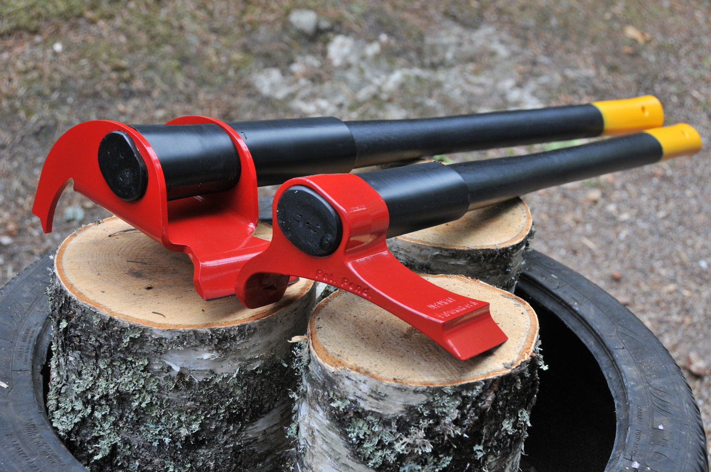 Crazy efficient (easy on arms and fast) way to split wood by hand for $250 using some physics and ingenuity. Not bad! Vipurkes Axe
Abortion
Former pro-lifer essay. Very interesting…
- Basically, pro-life people are really anti-sex in the end, as birth control methods actually save more lives in the end
- Unverified by me, worth a reread when it's important
After talking with Christian Boyd…
- To say that babies/fetuses aren't people is a major error here. Christian would go so far as to question birth control pills too. They are all means to reach the goal of:
- Pleasure of self, above all else. Not so good
- If anything contradicts the previous rule, feel free to re-define morality to fit what you want it to be. Also bad, re-listen
- Basically results in unrestricted no consequences sex and pleasure, at all costs. Society would go extinct, if it weren't for Brave New World's clone babies!
Marvin Minsky
In TED Talk
Also talks about overpopulation and stuff. Why not have 20 adults raise 30 children in parallel?
Really feels that certain solutions work well for certain types of problems. We should seek to be able to quickly classify problems as being subclasses of similar problems in order to grow our understanding.
John Wooden
Super-famous UCLA basketball coach TED Talk
Success should be knowing you made the effort to do the best of what you are capable, trying to improve the situation as it exists for you.
- As an example, those that are poor have to do tremendously more than the rich just to survive. Any level of upward mobility on their part is incredible, similar to the woman with the two copper coins.
- You can win when you're outscored in a game, and you can lost when you outscore someone!
If social activities take precedence over the other two <school, then basketball>, then you won't have any of them!
Three Rules
- Never be late! Also start practices on time and end them on time.
- No profanity
- Never criticize a teammate. Let the coaches do that.
Dating
Paradox of Choice, jam experiment. Alive and well for most things, but not for others. Too simple isn't so good either. source
Online
TED Talk by Amy Webb
- It's great for quickly aligning interests and other things and saving people a lot of time. However, the results aren't that great for the uninitiated.
- Shorten posts and be approachable (likeable) with people.
- Keep a minimum threshold. Lots of guys contacted her back with the updated profile, but none were good enough for a date?!
Newsong Foundations Class
Very little apologetics done in this class, which was disappointing
Not Christ-controlled Christian: life is horrible. Christ-controlled Christian: life is ecstatic and joy-filled.Note: Who is doing the controlling, the Bible or the pastor interpreting the Bible?
Lots of “illustrations” that don't have justification as to why they are correct.
Why do we memorize verses when I'm not convinced that they are true or not yet?!
Tattoos on the Heart (Book)
Book describing Homeboy Ministries in East LA, which was started by a not-afraid-to-swear Catholic priest named Gregory Boyle. Ervin and Julia both did internships there and loved it.
Summary
He is very much about God loving people unconditionally and not God “making us better”
Quotes
If there is a fundamental challenge within these stories, it is simply to change our lurking suspicion that some lives matter less than other lives.
our common call <from the God of the Bible> to delight in one another.
They wanted to signal to the gang members, “You are our sons/ daughters— whether we brought you into this world or not.”
We began tattoo removal because of a guy named Ramiro. A gang member , fresh out of prison , with a long record , had FUCK THE WORLD tattooed on his forehead, completely filling the space there. He told me his job search was not going so great. I’m only imagining him at McDonald’s: “Do you want fries with that?” and seeing mothers grab their kids, fleeing the store.
Businesses have come and gone at Homeboy Industries. We have had starts and stops, but anything worth doing is worth failing at.
“What’s the point,” they’d ask, “of doing good … If this <Luis getting executed by gang members> can happen to ya?”
With That Moon Language
Admit something: Everyone you see, you say to them, “Love me.”
Of course you do not do this out loud; Otherwise, Someone would call the cops.
Still though, think about this, This great pull in us to connect.
Why not become the one Who lives with a full moon in each eye
That is always saying With that sweet moon Language What every other eye in this world Is dying to Hear.
more to add from Kindle (scrape off highlights)
The Alchemist
Novel by Brazilian Guy, Paulo Coehlo
Lots of truisms that aren't necessarily true …
JUST BECAUSE IT'S IN STORY FORM DOESN'T MAKE IT TRUE Excellent introduction to the 10th anniversary. I don't totally agree, but there are some good parts
Prologue
Lake: I didn't see the Narcissus because I was too busy seeing my own reflection in his eyes?!?!Is the Alchemist advocating navel-gazing?
If I became a monster today, and decided to kill them, one by one, they would become aware only after most of the flock had been slaughtered, thought the boy. They trust me, and they’ve forgotten how to rely on their own instincts, because I lead them to nourishment.
It’s the possibility of having a dream come true that makes life interesting,
- Interesting perspective. He also says previously that travel and discovering the world is more important than finding God
‘The secret of happiness is to see all the marvels of the world, and never to forget the drops of oil on the spoon.’” –> Shepherd enjoying the world but not forgetting about his sheep.
The tribesmen preferred the taste of battle, and the thrill of not knowing what the outcome would be; the future was already written by Allah, and what he had written was always for the good of man.
But any father would be proud of the fame achieved by one whom he had cared for as a child, and educated as he grew up.
April Diaz (Newsong)
Former pastor at Newsong. Adopted two kids from Africa. Book is “Redefining the role of a Youth Worker” that Nate recommended.
Less Wrong / LessWrong
A website for skeptics / thinkers to assemble and debate and espouse ideas on things. A few tabs I found helpful:
Luke Muehlhauser
- The Ultimate Bias. Supernatural things definitely happen, however they seem to happen across many different religions?! How can we tell which is describing “truth”?
- His personal bio and blog (former pastor's kid (PK), started out very spiritual, ends up very doubting scripture, but never answers the spiritual part).
Study Space
I like outside / sunlight and many different spaces for some reason.
- Jon Wei recommended PeopleSpace. $50/month → $100/month nearby Edwards Lifesciences.
Battery Charging
- 1 hour of charge on Li-Ion batteries will give you 66-85% capacity. Battery University
- Newer chips have lower power consumption on idle? source using OS X
Lack of internet / can stay for a long time.
- For long reading, maybe look into an e-reader that has PDF rotation/zoom and epub support (convert to mobi for kindle).
- Also, AlphaSmart Neos (portable keyboard with USB and last 300 hours on 3 AA batteries) is $25 on ebay. Schweet.
- Better yet, just use a laptop with long life (do power analysis on Thinkpad using Powercfg or Intel Power Gadget?). Maybe add Pixel Qi screen to a different laptop ($130, maybe less) if it's really bright outside. Or use an old OLPC and try and get good battery life out of it.
- Chromebook on sale for $100 is a great way to go. Light, 10 hours of battery.
Headphones / Speakers
I was really impressed at the sound quality of good concert speakers. Part of me wants to really go for good sounding speakers.
- Great reviews/recommendations at the Wire Cutter
- Nice stack exchange post on it: https://music.stackexchange.com/questions/24428/pa-system-what-type-of-speaker-for-that-punchy-bass
- Interesting…“Any speaker is the correct one, <you need to focus on enough power for it”
Stop by Magnolia section at Best Buy on Thursday evening before 9:30PM. Specialist is Taylor who can demo the different things in the back room and explain what they are. (amplifier, speakers, wattage needed, etc)
- Is it really important to have it? No, but it's kinda fun to know what is possible and see what the prices are like used for a good-enough equipment. https://www.mrmoneymustache.com/2011/09/23/3-per-month-the-largest-possible-music-budget/
Magnolia
Really great setup, learned a lot. Basically, higher wattage is better for both loud and soft (which is quite counter-intuitive to me). Pioneer and Yamaha made nice amplifiers. But you also have to have good speakers. They need dedicated woofers, not mids that are getting the woofer signal. It seems that some speaker companies tried to turn off the mids on their crossovers, which didn't make sense.
I liked Bowers and Wilkins speakers the best over the other speakers in the room.
Standard amplifier class was fine, but some brands (Denon) didn't push very much either.
Also, my Android phone didn't sound as good as her phone with audio input. Apple products tend to do well too.
- Bluetooth is universally bad even though it is digital because it further compresses the audio

COSMOS
- Interesting series narrated by Neil Degrasse Tyson. http://www.cosmosontv.com/
- Very visually appealing. He feels the need to not be closed-minded and thinking we know everything.
Schindler's List
Me: I feel like if when I got hit by a car and wasn't wearing a helmet and my brain was permanently injured, I wouldn't be a useful member of society and wouldn't mind dying so another could take my place.
Mom: When did you start feeling this way?
Me: When I started thinking for myself and started trying to make sense of what everyone was telling me.
Mom: That's an endless cycle of meaninglessness you're getting yourself into! Ecclesiastes! sorta freakout
The lack of valuing people intrinsically is affecting every part of my life. There can be joy from a brain-dead person?
Bean Machine / Galton Board / Peg Board
Cool example of motion graphics and physics: http://www.shimicohen.com/The-Innovation-of-Loneliness Statistical Mechanics Paper Python Physics Simulator
A Few Scenarios
Things seemingly not described anywhere else:
- Drop from large height onto a row of pegs with barely any gap for the ball to fit. I expect the ball to bounce around a lot and produce a uniform distribution over time.
- Closely spaced pegs with low energy will produce 50% each time, which is not the case normally (there are large gaps in between pegs).
Chaos: When the present determines the future, but the approximate present does not approximately determine the future
Really cool phenomena where balls dropped on a peg board produce the normal distribution. However, the probability is p and (1-p) for each peg, but p changes after each level! (not a binomial)
It would be cool to plot p as a result of the angle of attack. Also, be able to play around with the peg width and roundness and width between pegs (or size of ball).
YouTube Link! https://www.youtube.com/watch?v=PM7z_03o_kk
Pretty good description from the original source, Natural Inheritance by Sir Francis Galton
Inductive Charging
My iPhone isn't accepting a charge over the cable anymore >.< However, it still works fine! So, might be good to buy a Palm Touchstone and somehow slip it into the back of the iPhone. http://www.amazon.com/Palm-Pre-Touchstone-Charging-Kit/dp/B002CMEIWU/ref=cm_cr_dp_asin_lnk or Qi looks like a good option
- Looks like my charger is bad?!?! Weird.
Plant Stuff
Talking with Andrew today during lunch (June 4 2014) was very interesting.
Some things are permanent, like Sarin Gas (permanently blocks oxygen reception in lungs), whereas others are more temporary (like caffeine, etc.). So, how “good” or “bad” something is depends on the effects and how long they last.
For a flower or flowers, adding colloidal silver makes the flowers last almost forever because something like <the receptor that tells it to turn off is blocked by the silver>. He bonds orange and apple plants together, and recommends doing hydroponics and leaving the light on for maximum growth.
Also, we still don't know the full effects of genetic modification, but the DDT issue is way overblown and in most cases we are 99.99% sure what certain genes “do” when manipulated. Monsanto is merely speeding up and directly manipulating the processes that selective breeding would bit-flip anyways.
Washing Dishes
Do I really have to wash my oatmeal bowl each time? If I boil it each time, isn't that enough?
- Pasteurization (High Temperature Short Time) is 162F to 168F for 15-30 seconds, plenty below boiling temperature of water. So, immediately cooked oatmeal should be good.
- Canning docs seem to say 5-10 minutes of boiling temperature to kill off bacteria completely, which will let you keep the canned food at room temperature. So, the recipe that uses steel-cut oats seems to be good if you boil for 5 minutes (below 1,000 feet). Good mixins
- Reaching boiling point is good enough. http://outdoors.stackexchange.com/a/1121
- What about botulism toxin? (needs boiling for 10 minutes to kill)
Conclusion
Things in less than boiling water for 15-30 seconds is enough to kill bacteria, so boiling water for 1 minute should be good. Good to go! Now…just to get rid of the potential stale/moldy flavor 
Speaking of Oatmeal
It's really hard to find a long lasting bowl good for reheating things at work. (I can't find the name, but you can find the same style at most goodwill stores) 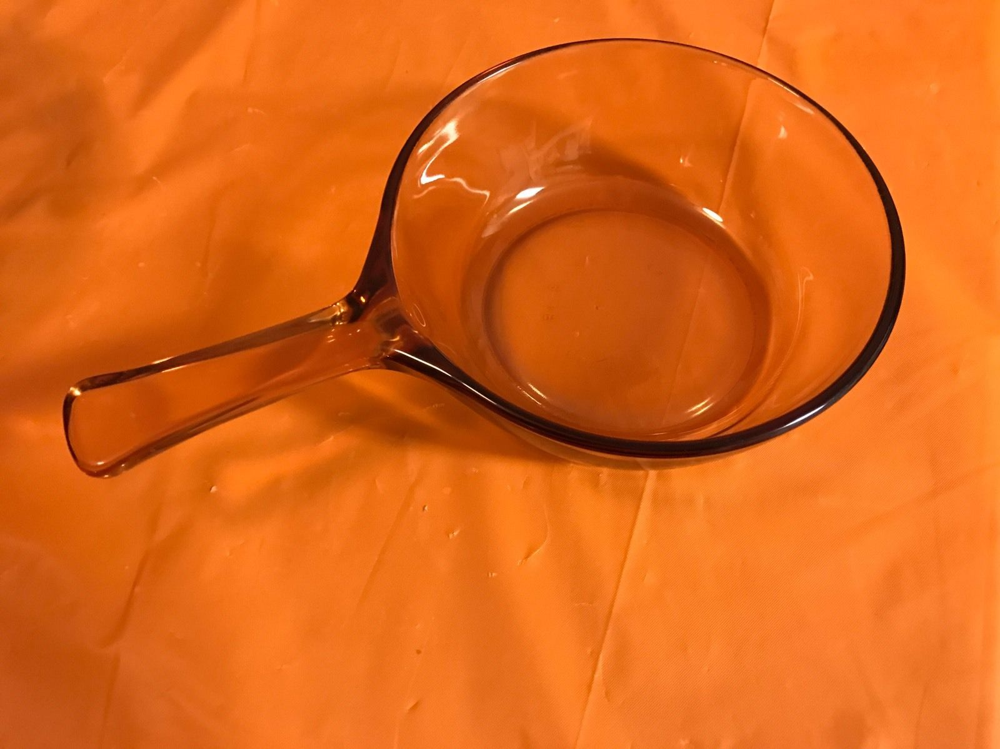. Look around and find it at Goodwill again? An alternative would be a $45 one on etsy… 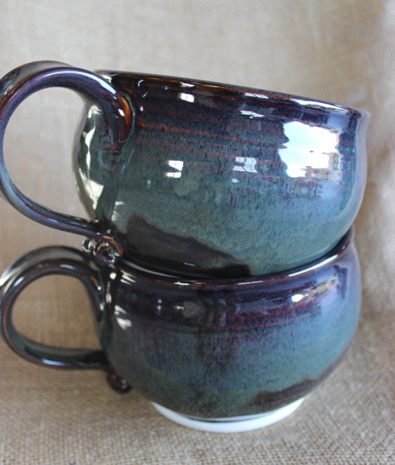
{kind=link}
{kind=link}
Music Transcription / Practice
Trying Denemo for now, MuseScore is another option.
Musescore
- To correct a C-flat to a B (both are enharmonics), select all notes then press up and down arrow and it should be corrected. Not sure why this would work though …
Despite what they say, I still like the ability to quantize an input. (I am comfortable with playing in time)
Natural Language Computing
I really like Christopher Manning!
- From Deep Learning for NLP tutorial THAT I WANT TO LISTEN TO: The most attractive quality of these techniques is that they can perform well without any external hand-designed resources or time-intensive feature engineering.
- Also known as Feature_Learning
- I gave it a skim. Lists some good “Deep Learning” toolkits and otherwise at the end.
- His statistical NLP book looks good too. (downloaded)
Coursera Class
Great so far. https://www.coursera.org/course/nlp. Lecture videos. You can watch / “preview” the class videos even if the course isn't being offered.
- Cache of assignments (it looks like they aren't really offering it for a while.
Stanford Engineering Everywhere courses look really good. Try to get copies of videos? Look at videos on Youtube. http://webcache.googleusercontent.com/search?q=cache:i0M1a8zz9rUJ:see.stanford.edu/see/courses.aspx+&cd=1&hl=en&ct=clnk&gl=us
Betty is one example. From the links on that page are a Sorta open-source speech interface but NLP engine wit.ai on Github and Firefox's Ubiquity, browser extension. Another option is Cortical.io
Ubiquity
- Mozilla team found it very important to have a smart parser so that later developers don't have to do so much thinking. Unfortunately, nobody used it and re-implemented it in different parts.
- Also, discovering commands was not implemented / was server-side. SUPER-IMPORTANT for new users
- Inputs are not just strings
Devs
- Dev tutorial (more where parts are located)
Viv is a recent startup by the founders of Siri. The infographic is a great example of the complexity of just a simple request.
It'd be nice to have the computer do stemming / thesaurus lookup automatically when comparing things.
Auditory Condition Monitoring
Someone retired from the Navy told me there's basically a few people in charge of making sure that the engine on a submarine sounds right, and that it very easily could be automated for long-term analysis. It looks like there's a wikipedia page on it! Condition_Monitoring
I could use something for my bike / car, where you upload a sound clip recorded with a piezo mic or a clip microphone or just recording from your smartphone and it would use machine learning to detect what the issue is. What's the market?
Counterpoint
- Not all conditions are audible. Sometimes you need a mechanic to do periodic checkups anyway and make sure all your fluids are good, etc.
Currency Arbitrage
For an interview question with Priceonomics. Nate wants to do it on real Forex Data. Other sources of finance data
* Recomputing when an edge has changed value. CSTheory StackExchange
Pete
If we need ir camera, then we might be able to print small enough. Now need control on that substrate. Hmmm…
We need occupancy detection. Face detection in a low light situation might be good enough too.
- Reliable, right price point, meets a perceived/actual need.
- Logging/processing video.
- Kwabena's project is OpenMV: https://openmv.io/pages/faq
- They did their board build and ship with https://macrofab.com/ and launched / publicised with KickStarter.
- 100 mah idle, 140mah active. Could probably use a motion sensor and get it down
- Big energy expense is wireless transmission
- However, can probably get away with logging to circular buffer in SD card the interesting bits of video and upload in real-time when asked for.
A big value sell will be HVAC for zones in the home. Easy purchase w/ central AC.
I realize that I want to sell real needs, but not perceived needs/wants that aren't actual needs. Well, some people just like the light turning on automatically! Or their car to look nice!
- “I don't want to explicitly or even implicitly encourage people to go towards a Brave New World mentality!”
- Well, what can you actually control?
Occupancy Detection
Ask Pete what his use cases are…
Should light stay on when person is sleeping? How can we distinguish that from watching tv?Light can stay on.- How insensitive are these pir motion sensors anyways? Waving your arm slightly is a pretty easy way to signal that you're still there if you're working on computer or watching tv….why is that annoying?
- Maybe a specific motion adds periods of time to the light?
- Minimum $200 for equivalent camera thermal sensor to $2 pyroelectric sensor…
- Unless of course you don't need 30Hz refresh of the entire screen It's probably okay to use lcd to do fancy sampling (what was that called…1 pixel camera, compressed sensing! but I feel pyramiding? will be good enough) of entire FOV. Needs to be in focus though, as we don't want to blur the body temperature. So small aperture = infinite focus.
- Also, don't need to sample every pixel every refresh. Just the pixels that are that person, then alternate between that and the rest of the room. Can detect new things/motion when rest of room changes, but might need really good ADC/amplifier to match differential amplifier performance.
- Can do prototype with LCD screen (an old android phone or tablet that's easy to flip over the screen and ideally remove backlight, doesn't have to be high density for now, although to miniaturize final version should), measure temperature with non-contact thermometer, and might need to use webcam shell & lens so that it's in focus.
Maybe sense pulse instead. Test with thermometer at home and see if it oscillates at all.Doesn't oscillate on the .1 Farenheit level. Maybe at smaller level though…- Can use LCD to limit light from specific regions of FOV. Can use semi-random pattern to localize quickly like how Johnny Chung lee did it. Only need 98.6! But surface temperature is less, maybe varies more.
- 1 pixel camera took 800 readings to resolve 4096 pixels. Wow….that's a lot more than I thought
- How does it detect motion with differential amplifier if there's only one sensor…? There are two different regions in the same package.
- What is cost to manufacture of thermal camera? Why is an LCD screen + 1 pixel cheaper than CMOS + same sensor area?
- FLIR lepton is chip, $180. http://www.digikey.com/product-detail/en/flir/500-0690-00/500-0690-00-ND/5215152
- This one looks promising too though: http://www.alliedelec.com/omron-electronic-components-d6t8l06/70254168/?mkwid=sY91nLHOD&pcrid=30980760979&gclid=CjwKEAiAg5_CBRDo4o6e4o3NtG0SJAB-IatYjSpwtlyZatdhpV_2jjDy9h6Ibl6l_h61p4xf1jWMWxoCyS_w_wcB. Maybe there are others, call around?
- Might not need a fresnel lens for focusing if the unit already has a lens
- There was a paper that wrote about a wheel with holes in it…
- Response time of pyroeletric sensor is supposedly 5ms, source.
- thermopile array. AMG8832 is 8×8 for? https://hackaday.io/post/5219
- D6T-1616L has 16×16 but seems out of stock.
Pyramid Algorithm
Start simple. 2 regions.
| A | B |
|---|---|
| A | B |
|---|---|
| x |
| A | B |
|---|---|
| x |
| foo | 123 |
|---|---|
| 123 | 123 |
Whoops, turns out for 1×1 sensor, you still have to sample each end pixel! Even the 1-pixel camera guys only reduced it by …. 1/3 I think with compressed sensing.
Microscanning / subpixel / Superresolution
Or, how to turn an 8×8 panasonic sensor into a higher resolution one by scanning it and trying to deconvolve the averaging done by each higher-level pixel…
- Great hackaday post here: https://hackaday.io/post/5219
Motion
Hobby servos are ok, but not accurate?? https://electronics.stackexchange.com/questions/234788/micro-standard-servo-resolution
- Using a light shining down on a servo actuating a long straw, I could watch the consistency of it going back and forth (didn't have to use laser). It was only +/- 0.5 degrees. I don't think I can handle that for Pete's application.
- I'm surprised servos don't have optical encoders in them on the drive shaft side…although I saw a “high resolution servo” of +5000 steps for $100.
Other people put optical encoders onto the drive shafts of geared DC motors like Sparkfun. Problem is, theirs is still 500 steps per revolution, or about the same accuracy.
- Polulu has 1000:1 gear ratio ones with high-res optical encoders for $30 each: https://www.pololu.com/product/3058
So…geared stepper motors at 500:1 ($5!!) with microstepping (max 8 or 16 steps) should net enough.
- Might want to use accelstepper library for acceleration to a stop.
- Adafruit and sparfun have motor driver breakout boards. Chips are $3 apiece, but microstepping probably could be approximated by PWM on a microcontroller and a power electronics chip L293 h-bridge?
- Adafruit is using the PWM to drive it, looks kinda complicated. Interesting…
- Hackaday has an excellent comparison of the drivers. http://hackaday.com/2016/08/29/how-accurate-is-microstepping-really/, and someone wrote a simulator in Excel that explains the issues?! https://github.com/rcarlyle/StepperSim
- Need additional power, a Micro-B breakout for $1.50 looks great
Might want to gear down a stepper motor
- Email hackaday guy
Better methods
http://stackoverflow.com/a/21123838/931280 (recommends Richardson Lucy deconvolution for noise robustness). Implemented pretty well with scikit-image
For the simple case of averaging, why doesn't Richardson Lucy work that well? Anyways, writing down notes so I can finish the IT band article.
- Adobe writeup, Depth of Field / out of focus blurring can't be reduced.
- A good paper by Jia: http://www.cse.cuhk.edu.hk/~leojia/projects/motion_deblurring/index.html
- Mentions optimizing boundary conditions. READ THIS Noise intensity
- Another paper by them, “robust”, with L1 deconvolution. http://www.cse.cuhk.edu.hk/~leojia/projects/robust_deblur/robust_motion_deblurring.pdf
- Different paper, might not get to: http://www.wisdom.weizmann.ac.il/~levina/papers/deconvLevinEtalCVPR09.pdf
“When you estimate the blur kernel make sure you impose symmetric constraints and the fact that the summation of all values in the blur kernel is equal to 1”
Convolution in Time Domain
Unfortunately sympy doesn't do variable elimination! Like, x+y = z, y+b=z, solve for x but get rid of z. Mathematica does it though… http://reference.wolfram.com/language/tutorial/EliminatingVariables.html
http://dsp.stackexchange.com/questions/34103/subpixel-what-is-it Particularly this old paper: http://www.cs.huji.ac.il/~peleg/papers/cvpr88-KerenEnhancement.pdf
Motion
Can you tell the difference between bipedal (human) and quadripedal (pet) motion in a passive infrared motion sensor? Most don't do it using DSP, but it'd be a nice timeseries machine learning problem.
- Simulate a PIR motion sensor by taking average motion on a security cam video or something. Or, use all of the pixels…
- The patents look pretty low-cost but lame too
Simpler problem, can you tell when someone moves in bed at night? Python + OpenCV solution
Occupancy
Is there a living human being in the room?
Near-infrared (the camera hacks removing the infrared filter) won't capture long and medium wave IR as the sensor design is thicker?? not sure. FLIR ones are pretty cheap nowadays though, ~$250 on amazon. or sparkfun
- Panasonic Grid-Eye is $25 for 8×8, not bad. Eval Kit Site, buying Eval Board
- Glass blocks IR, so LCD modulation is out.
Forks Over Knives
The main study that they reference where rats didn't get as much cancer because they didn't eat casein, it was because the rats died sooner. From Anthony Colpo, who seems to be a pretty reasonable chap but frustrated with the lack of questioning occurring in the world today –> making him a pretty mad chap.
* Also see (and summarize) http://rawfoodsos.com/2011/09/22/forks-over-knives-is-the-science-legit-a-review-and-critique/
Power Usage
- 1 Watt = $.005 a day –> ~$2 a year at $.22 a KwHr
Trains vs Trucks
- Great discussion at StraightDope. While trains are way more efficient (how much more?), a truck can go point-to-point and has more flexibility than a train. So, stores often combine them: (“mixed-mode transportation”)
Christianity
- The Eastern Orthodox Church, in disagreement with the Roman Catholic, regards itself as the historical and organic continuation of the original Church founded by Christ and his apostles.
“God wasn't offended that I was angry at God.” – John Marc McMillan, referencing the death of his friend that prompted him writing “How He Loves”
Rebecca Lujan Loveless
I wonder when she changed her name. She led the workshop at Newsong….forgot the name……Dignity Serves. Gotta import that from Mediawiki…
- Anyways, she doesn't believe in Jesus/God anymore. Rather, in love. As God hasn't answered her prayers, and she's been terribly disillusioned by what churches tell her and how they contradict the Bible.
>World Vision had a unique opportunity to admit how critical this conversation actually is. They could have offered us tears of humility to admit that while they didn't have all the answers, the LGBT community and the hungry children of the world deserve that we give our deepest love and care towards matters in which we disagree. That no one deserves to be objectified and turned into a lifeless pawn that proves why our agendas are better than theirs. Be it a Gay Christian or a little girl from Zambia, they are our global brothers and sisters, our daughters and sons, our mothers and fathers. They are people who are worthy of respect and their dignity should never, ever be subjugated to our inability to love one another in the face of painful disagreements….
I thirst for a remnant of critical thinkers to rise up and forge new paths of dignified service, filled with compassion and overflowing with humility. I hunger to be a part of a culture that participates in this critical thinking, where we challenge each other to thoughtfully evaluate how we help others. I know that we are out there, on the margins, perhaps with sour looks on our faces or even worse, weeping in the shadows.
But the wind is singing a new song and it sounds like a revolution being birthed in the hearts of those of us saying we want to do things better than we have. Being discontent with how things have always been done is not cynicism. Standing up to unhealthy, undignified or unethical practices does not make us bitter or hateful people. Asking tough questions and expecting truthful answers from the organizations we support does not make us angry or resentful people.
It makes us people of justice. It makes us people of wisdom. It makes us people of love. –from World Vision and the Winds of Change (WV's policy to allow homosexual marriage, but then rescinded it in 48 hours after large backlash)
Also another article on depression.
Prayer / Meditation
How different is prayer than meditation? A worldly perspective on meditation in: http://www.artofmanliness.com/2011/09/07/a-primer-on-meditation/
How to Read A Book
Getting Computers to Help
Syntax Highlighting for Reading
It'd be really nice for a computer to highlight key assertions and parts of sentences to help me read easier. It'll be a work in progress as I learn how to read.
- The NLTK (python) book is free and goes into probability, etc. DO IT when you have time / reprioritize it.
- There's a text analysis conference too: http://www.nist.gov/tac/
Fun Games
- I really liked the interactiveness and attention to detail of Z-Ball. It's like breakout, except better. Uses OpenGL obviously.
Web Interaction
Three.js, O'Reilly book on D3
- Newer book, http://alignedleft.com/work/d3-book-2e
- Also look at ObservableHQ, written by Bostock and friends
Recording Skype
The previous program I used died 1.5 hours in. >.< Try: http://vb-audio.pagesperso-orange.fr/Cable/index.htm or JACK next time.
- It was sort of important, but not that important, ergh.
Hillsong I Heart Revolution Movie
A really thought-provoking movie. Amazon DVD. One review on Amazon feels they go humanism-ish. Hmm…
What if the human race…isn't a race at all?
* Hehe…I see what you did there!
Trivium
Very motivating essay by Dorothy Sayers. The Lost Tools of Learning
And a respectable redirection by Hillsdale college Terrence Moore: http://www.hillsdale.edu/file/outreach/charterschools/The-Limits-of-the-Trivium.pdf
- We should be pulling from history too.
- Strictly following the trivium ordering is unjustified. For example, older high schoolers shouldn't be exclusively studying rhetoric, same for younger students and grammar. They should mix still…
Heritage Christian School
The high school my older brother attended. Heritage_Christian_School_(Oregon). Apparently they really felt the Trivium was important!
- Story on last valedictorian Jordan Ott, now a EE at Univ. of Washington. Mentions their logic instructor Jay Hawthorne, who would be good to interview.
Naturlism Debate
This looks to be a very good debate
- This epistemological stance doesn’t rule out the existence of non-physical entities such as souls, spirits and gods, but it does require that existence claims be supported by repeatable public observation. The naturalist primarily wants a reliable, coherent picture of the world, and she doesn’t know in advance what the world’s ontology will be.
- In defending and promoting science, we in the West can help other cultures eventually recognize the objective factual basis for treating people equally. Naturalists, who champion science and other intersubjective ways of knowing about the world, therefore need not be wishy-washy cultural relativists when it comes to morality.
- Ask Tom/Theresa Scott about Trivium / Quadrivium? Is it trivial for him now that he feels like there was no hope in getting a job?
Rhetoric
It probably explains how the founding fathers managed to carve a nation out of 13 squabbling colonies. And let’s face it: Our culture has lost the ability to usefully disagree. Most Americans seem to avoid argument. But this has produced passive aggression and groupthink in the office, red and blue states, and families unable to discuss things as simple as what to watch on television. Rhetoric doesn’t turn kids into back-sassers; it makes them think about other points of view. –Jay Heinrichs, blog post and great looking book.
* How does he focus his life energy on a specific topic and write a book? Wow… Great PDF of all the rhetological fallacies
- Mormon testimony from the president on the validity of the Book of Mormon. Very tear-jerking, but is it true? (1 min long) youtube
Social Thinking
- Socially Curious and Curiously Social. The 2-star Amazon reviews are people with autistic / aspergers who are saying it takes all of their energy and intelligence to be “neurotypical” (socially acceptable?) and would rather sit in a corner and work on other stuff. Hmm… interesting. Looking forward to reading the book regardless.
- Thinking About You, Thinking about Me might be another interesting book.
From a negative review of the book:
With all my knowledge that I posses, you would think I should have reached it already. No. I am still an alien. I am still disconnected. I can mimic neurotypicals and appear to belong but my inside is weeping… I am reminded that the way I think and feel is wrong. Among neurotypicals I feel like I am bad and unacceptable. I felt like a bad person for 27 years because I saw the world differently. Then I discovered there is a whole community of people who think the same. Among self confident autistic people (the ones who accept themselves and don't think that they are only ok when they act “normal”) I feel good. In ASD community I feel the sense of belonging.
Machine Learning
- Lots of cool examples at Mathematica's website. What is the classify function doing under the hood so that it can do digit recognition so well?
- Test with letter recognition. Is C recognized as G?
- What about different letter sizes and warpings in style?
Beatboxing
- Gavin Tyte is the tutorial that you really like: https://www.youtube.com/user/RevdTyTe
Hairstyles
- Marta is the name of the <hispanic> haircutting lady at Great Clips by UCI. She did a really good job
{kind=link}
Guitar
- Picking is pretty cool. Also, more at Worship
Soap
Foaming soap
Bar soap + boiling water = liquid soap
Liquid soap + water = foaming soap?
How about foaming soap back into liquid soap?
Generally people dilute Dr. Bronner's liquid soap in a bunch of water, but I feel you can do the same with hand soap too.
The problem with diluting liquid soap (it's actually surfactant, not soap but that's a whole other topic) as has been suggested in this thread is that you also dilute the amount of preservatives in the liquid soap. You basically end up with something that bacteria would find quite hospitable.
Further, bar soap doesn't have preservatives (it doesn't need it) so when you make a liquid from it you are also asking for all sorts of growth.
Source: I spent two very boring years doing R&D at a cleaning supply company.
Smells
- I really like the smell of Paul Mitchell One (original) shampoo. Coconut, white ginger, and some other stuff.
- Made an order through a sketchy website for Grandpa. checkout_-_lifeco_us.pdf
- Maintex Coconut Body and Shower is similar smell, their number is (626) 961-1988
- Another good smelling one is the pink almond soap.
- Irish Tweed Green soap is popular for men by women. Not sure if men like it ….
Accelerometer Alarm
- For homeless guys like Chon whose stuff keeps getting stolen.
- Can buy piezo sirens (100 db?!?!)
- Sensing: Tilt switch (like pedometer kind) or accelerometer (more expensive).
- Is there another device you can reprogram?
- something….probably would be good to have a key fob for disabling it (and not having to click a button all the time) too. This is good for losing stuff as well.
- Maybe using the “lost stuff” pager technology, except needs to work in reverse.
Grammar Checker
- Maybe Language Tool? https://www.languagetool.org/ (open source, uses ngrams)
- A similar/better grammar checker is Ginger. The underlying algorithms use “the internet” to train the model and use user-given feedback as well. A lot for $10 a month.
- Linked by John Wu: http://www.hemingwayapp.com/. Pretty cool!
Music Generation
- How do musicians describe their own chord/music innovation process? Why should we be stuck to a piano?
- Try drawing it out on a piece of paper and then understand your pressing and modulating it with OpenCV and… a synth program that can handle arbitrary amplitude / phase? modulations….coool

- Very similar to http://www.kickstarter.com/projects/instrumentslab/touchkeys-multi-touch-musical-keyboard except potentially a lot cheaper.
- Since I don't currently have a piano, I would like to play around with synthesis stuff, and learn how to make good sounding music that communicates deep and important thoughts and emotions. Movie scores are awesome for this! YouTube Link! https://www.youtube.com/watch?v=KylMqxLzNGo Adagio for Strings or YouTube Link! https://www.youtube.com/watch?v=RuESB9yhgvE Run To You would be some examples.
Wiki Wishes
- Introduction pages are generated automatically using the first image and maybe the first few sentences from each sub-page. Why is this important? Not really that useful if you have a good page name / description, but it makes things fun visually and attractive.
- No heirarchy in MediaWiki??? Nope, I think just really good cross-linking and categorizing.
- Is uploading images quick and easy in MediaWiki now?
- Moving pages is seamless and links are updated automatically. Dokuwiki can't do this, but MediaWiki seems to be able to.
- Should you switch to markdown formatting for ease of use?
- Maybe you should put some of your book summaries / excerpts onto Wikipedia / WikiQuotes for others benefit?
Biking
Bugs in Bed
- We have had bed bugs before. I think I found some larvae.
- They can survive for months without feeding >.<
- Another way to get rid of them other than diamotaceous earth is attracting them using dry ice.
- I distinctly feel really small things jumping on me. My M.D. roommate says it's neurophysical response (your fears are amplifying the situation and making the sensations up). They might be dust mites which apparently can jump too
"Superman" Mode for viewing clouds
- Microsoft Flight simulator seems like a good way to get started.
- Technical Implementation by a former Microsoft employee
{kind=link}
Tips for Frugal Living
Housing
- Get a mobile home, try and buy the land underneath it (most mobile home parks rent the lot to you).
- Then plant a garden to get some food and wait for the apocalypse!
Microsoft Equation Editor Tips
- Go to View → Draft mode for faster input
- Play around with an even faster input method: http://blogs.msdn.com/b/murrays/archive/2011/11/21/klinke-s-streamlined-math-input-notation.aspx. Need to install OneNote to get full tips
- Or just do it yourself by “adding custom commands to the AutoCorrect list under the Math AutoCorrect menu” (which it looks like the guy above did)
Auto-Dokuwiki Link Posting and Appending
- How do you quickly add things to a wiki?
- Hahaha! The speed doesn't really matter that much, I mainly don't know how to organize information well!
* Latest idea in a long iteration (simplest is best I think) * Write a Chrome Extension that iterates through all of the tabs, gets the links, and displays them in a selectable form. Then stick them into Dokuwiki for later searching. * Mmmmm, I'm mostly just lazy! Ahah! * Helpful pages (Iterating through tabs in Chrome) * Somewhat similar to Gimmebar * Someone wrote an XML-RPC extension for Chrome already: http://iamfriendly.com/blog/delectable-your-own-private-delicious/. Dokuwiki has a similar API to Wordpress. * Also I was thinking of scraping things with OCR. Turns out there's an open-source tool called Tesseract that Google is working with! I can try online: http://code.google.com/p/tesseract-ocr/wiki/AddOns
Jam with Chrome
- Reimplementation of our Interactive Music class project with Roger Dannenberg
Creative Filming
- It's called tilt-shift photography,but they did it in post-processing
- Dual action of low number of frames and fast playback makes for a child-like motion of cars/trucks moving.
- Also, for some reason that blurring effect looks really doll-like too
- YouTube Link! https://www.youtube.com/watch?v=Fk9EBOOAYiU
Ground Speed
- Thought about doing it for determining skiing speed. Yet another use for a doppler radar system.
Color Changing Octopus is Awesome
YouTube Link! https://www.youtube.com/watch?v=d3mD_hLkx6c
Diffraction (Light Bending?)
- Simple Exploratorium explanation using hair strand and feathers. Their actual exhibit
- How much does it bend going around a knife edge?
Kinect Presentation
- Dr. Ivan Tashev: The guy that designed the audio interface for the Kinect. Pretty crazy but interesting stuff, many applications that I'm not sure I'm okay with yet :) His book
- YouTube Link! https://www.youtube.com/watch?v=_y2xpXiArCY
Free Courses
- Nand2Tetris, and has a TED talk. Teaches you computer architecture, which should be a good thing to learn…
Javascript
- Useful libraries with Pictures!: http://coding.smashingmagazine.com/2012/09/23/useful-javascript-libraries-jquery-plugins-web-developers/
Aligning and Straightening Back
Excellent Reddit post on why we do certain exercises. Summary of all of them on page 4-6 here
- Help from Stacie Lue
- YouTube Link! https://www.youtube.com/watch?v=vrO5WfFJ4Uc
- YouTube Link! https://www.youtube.com/watch?v=0RB1sku8fx8
- YouTube Link! https://www.youtube.com/watch?v=QnyJ1YD4Phg
Spectroscopy
- Skin doctor said spectroscopy probably wouldn't work as good for skin cancer detection. Chemistry method would probably be best
Psoriasis
{kind=link}
Real-Time MRI
Engineer in Shenzen
- Really awesome blog by an engineer! http://engineerinshenzhen.com/
Ergonomics
Mobile Computer Stand
Mobile for putting away easily. Monitor at standing height. Use laptop for keyboard, unless you have a better keyboard idea.
- Doesn't need to have wheels though. Could just be a microphone stand, not necessarily an IV pole.
Ergo guy at Intel
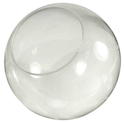 (put your hands on it) for keyboard and mouse? I wonder if it's more ergonomic after all. Maybe get frosted version too.
{kind=link}
- Make frosted? Valspar frost spray, but might wear off
- Add playdo or similar so that it molds your hand better and you can define “keys” so you know where to touch?
- Stick a camera with wide lens in middle and do a little <a lot> of machine learning / computer vision.
Mouse should fit your hand. I have big hands (8“ from base of hand to tip of middle finger by one measure), so I should be able to rest my whole hand on the mouse and let it support me.
- Also, a vertical mouse and keyboard seems more ergonomic for me. But very weird for other people to use
{kind=link}
- DIY stand for split keyboard here
Static height + stool chair or adjustable height + normal chair. Decisions decisions…
Ergonomics Manual
Excellent! But more big stuff and not mouse stuff. 16-ergonomics_manual_dan_macleod_english_only.pdf
- Videotape yourself and playback at fast speed
- Make a step for standing desk so you can shift your weight at times.
- Add floor mat padding
- Move around!
A further resource might be his more technical work here
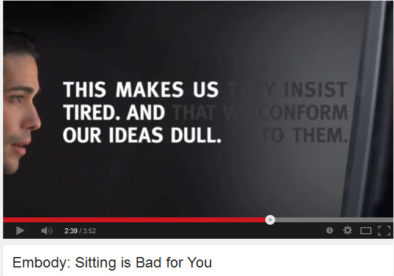 My current setup includes “TV” prism glasses (a Bauernfeind_prism that changes direction of light 60 degrees) that allow me to lie down and not sit for long periods of time. However, in the long term, I might have symptoms similar to people on Bed_rest (less circulation, etc).
- Also, maybe foam might be easier to do for seat? ehh, I like plastic/wood better
- I really like seats with contoured bottoms. Really awesome support. Something like the wood hanging bench or the Herman Miller Caper chair:
- Seat contour vs “seat cushioning”, all pulled from a class?
Seat Pan Contours - Half body weight is supported by an 8% area under the “seat bones” (ischial tuberosities). If the seat is hard and flat the pressures can be 85-100 p.s.i. Seat contouring and cushioning can be used to distribute pressure over a larger area and rotate the pelvis forward the promote better posture.
Seat Cushioning - recommended thickness at 1.5-2”. Cushion should be firmer in back and thicker while less firm and thinner at front. Too much cushioning can cause the body to sink into a chair constraining movement. A soft chair may be comfortable at first, but as the body sinks blood circulation lowers, skin temperature rises in affected areas, and compression under thighs increases. These factors combine to increase discomfort.
Cushion Compressibility - Compressibility is termed indentation load deflection (ILD) or indentation force deflections (IFD). An ideal combination is a soft top layer (25% ILD) over a firm bottom layer (65% ILD). Increased ratios between the two, greater than 2.6, leads to better quality support.
Bfxr
- 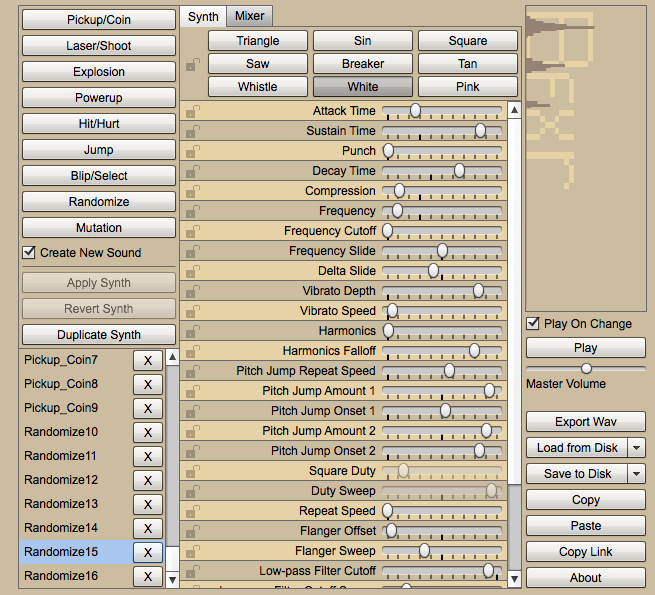 8-bit sound effects, pretty cool UI, but could use more ML? sort of auto-learning generating. Pretty cool!
Kinect
- Uses combination of time-of-flight and projecting points and stereoscopy TechnologyReview
LaneHawk
{kind=link}
- Visual grocery scanner and identifier, primarily for “bottom of basket” inadvertent leaving and purposeful theft.
- Sold Evolution Robotics Retail in 2009. They were making 5 million revenue, 2 million profit, and sold for $25 million.
- Not sure how easy, but I mean, come on, it's just some OpenCV!
Noise Cancelling
- Generally foam earmuffs do <35 db average. Also, they don't do low frequencies that well.
- Active noise cancelling do low frequencies well, but at the cost of boosting high frequencies???
http://www.avweb.com/news/avionics/183223-1.html
- Hard to do well, but reduce external noise up to 46 dB (compared to 32 dB for just foam earplugs). For fighter pilots and aircraft carrier personnel.
- http://www.sound-innovations.net/ace.php (won military contract to *develop*)
Coffee Joulies
- Great idea to keep coffee warm from two inventors
- Needs insulated travel mug with lid on it to work noticeably well. Also, them sloshing around might get annoying. We'll see if they are useful for Nick/Dad. At least it's an interesting chemistry experiment
{kind=link}
{kind=link}
Recreating Doc Edgerton's Machine
You need either a solenoid or a speaker to “vibrate” the water out at a consistent rate. Mel Siegel states 1/f noise will push through regardless…
{kind=link}
- Need some sort of variac apparently for getting the drops to work. Not sure how…needs more research.
- You can use an LED flash instead of a strobe for flash, probably better for consistency and easier to use voltage wise. Or just hack an off-the-shelf strobe flash to be more accurately timed.
- Also use rotary encoders instead of potentiometers for long-lasting, wide-range, and accurate input.
I did something similar about 5-6 years ago. I started with a prototype using a 556 dual timer to check the concept and then built a final version using a PIC driving an LCD display and a single 5W LED. I built my strobe for a microscope illuminator so that I could observe the motion of the cilia of microorganisms. I controlled the flash period using a rotary encoder and it was settable between 1/5 sec and 1/256 sec in one continuous range which would display on the LCD. The flash duration was settable from about 5 to 250 uS. I drove 15A current spikes through the LED (5W LEDs can handle it as long as you keep the duty cycle low). It was really surprising what could be seen using the strobe. Cilia that normally move too fast to be seen became clear as day and one could see patterns in their motion like the wave-like pattern you can see in centipede's legs when they are moving fast. Really amazing when you consider that a single-celled organism has no nervous system to coordinate the motion.
Way cool, visualize cilia?!
Clapper Light Switch
- Really annoyed with getting up from bed to turn off the light. You use a relay (SparkFun Tutorial). However, not sure how to get power to microcontroller…
- Customers complained about activating at dog barking and door shutting. Two claps turns on/off. Maybe measure the time that signal is max to just get hand-claps? (every other system seem to be pretty analog…)
Human-Computer Interaction
- Chris Harrison's stuff is quite good.
- Scratch Input (was using DTW, but switched to simpler method)
- Skin Input (tapping etc. not sure how he matched them)
Floating Light-Up Lightbulb
- It actually works! http://bea.st/sight/lightbulb/ and more details http://bea.st/sight/levitation/
{kind=link}
Askew! Game
- Looks kinda fun, but other balancing games are a little crazier Post-Gazette Article
{kind=link}
Cornell Cup Intel Competition
- Real Virtual Reality?
- Johnny Chung Lee Blog post (uses just vision, no accelerometers…gotta be really fast though!)
- I would like something a little more practical though / useful
Face Recognition and Face Projection
{kind=link}
Spirograph Clock
{kind=link}
OCZ NIA (Brain Control)
- Might get into it eventually. Still would be fun to play around with!
- OCZ has some drivers (Windows-only) for different games too. Located at OCZ
{kind=link}
Accurate Persistence of Vision using an Accelerometer
- This is truly outside-the-box thinking!
Kinect for Good
Medical Surgery
Music Transcription
- Interesting Intel ISEF paper on this from Catlin Gabel student. 'Dem's some smaht kids :P isefabstracts.pdf
Motion Encoding from Optical Mouse
- Kit from Rachel's Electronics. Uses Avago sensor
- Apparently not too useful, as Andrew ___ at CMU did a hovercraft based on this with Brian Kirby and it wasn't too accurate.
{kind=link}
Diffuse Strip Light
- How does an LCD monitor led backlight do it? Light guides n stuff
-
- Hot glue, paraffin wax, 50% transparent acrylic, polyester fabric like 4488, cotton balls
A popular way to do it is LED strips with leds close together, then apply Tube Surface Extrusion over top of it. https://www.youtube.com/watch?time_continue=107&v=uWxELc2g7WE
Check out Ellumiglow in Portland to see brightness of EL strip and laser / led easier?
How the “LED Neon” thingys achieve diffusion. However, if you use a higher led density, it's possible to not need the depth. 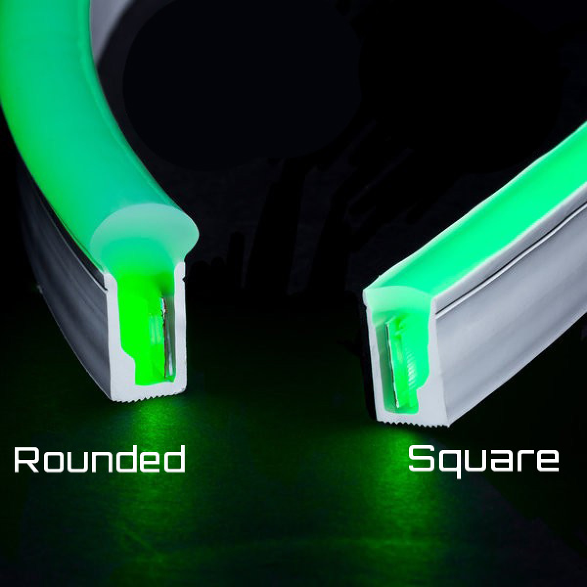
{kind=link}
https://www.alibaba.com/product-detail/LED-neon-flex-tube-light-flexible_60431786316.html
Think about it some more. Might not even be necessary for biking.
If you do do it and want individually addressable ones, Adafruit ones are good. Also can drive <a short strip> with a small, cheap ATTiny: http://www.instructables.com/id/Use-a-1-ATTiny-to-drive-addressable-RGB-LEDs/
Bike rim: https://norilights.com/. Haha, they're just using the cheap silicone things with UV leds instead! 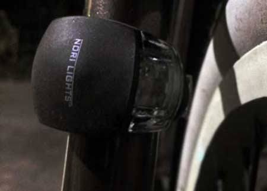
{kind=link}
Way better is these guys I think. Hot glue for water proofness, nice! YouTube Link! https://www.youtube.com/watch?v=l6YRsurIQMQ
- Is it worth it? Yes?!
- Can use 5V lithium ion battery pack or 4 1.2V AA/AAA batteries.
- Or use a step up converter
- Sigh, so many options.
Power
https://electronics.stackexchange.com/questions/55823/how-can-i-efficiently-drive-an-led.
- Interestingly, a well-chosen resistor provides 75% efficiency and a linear / switching regulator only gets you 80-90% efficiency. .2 amps vs .1 amps, for most rechargeable applications, isn't that much!
= Switching Regulators = https://electronics.stackexchange.com/questions/166614/cheap-switch-mode-regulator-comparable-to-lm317
A recommended voltage regulator: https://hobbyking.com/en_us/hobbyking-yep-20a-hv-2-12s-sbec-w-selectable-voltage-output.html. $15, handles 20A, and selectable voltage output. Nice way to use those batteries you have lying around.
Another one might be this LM2596 6-pack for $12 on amazon. https://www.amazon.com/gp/product/B01GJ0SC2C/ref=ox_sc_act_title_2?smid=APHB2NWNKDSBL&psc=1
Glow paint
Powder
Two options, older zinc sulphide, dies within 2-10 seconds. Newer stuff (strontium aluminate) is apparently way brighter and 10X more expensive
- $10 isn't so much to try it out https://www.amazon.com/Glow-Dark-Paint-Premium-Available/dp/B06XHW1HR3/ref=sr_1_17?ie=UTF8&qid=1519796216&sr=8-17&keywords=strontium+glow, or https://www.amazon.com/Glominex-AT955-Ultra-Paint-Assorted/dp/B00R1O4GT4/ref=pd_sim_201_2?_encoding=UTF8&pd_rd_i=B00R1O4GT4&pd_rd_r=M2Q9FYXT9Y12BXRQBQWK&pd_rd_w=mmap3&pd_rd_wg=7Kw1V&psc=1&refRID=M2Q9FYXT9Y12BXRQBQWK
Paint
Apparently exterior latex paint lasts the longest against wear and tear of plastic decoys. http://www.refugeforums.com/threads/what-paint-is-best-most-durable-for-plastics.155692/#post-1329154
Plastic Sheet
Can buy at Multicraft plastics or TAP plastics. Explain your goal (wheel sized tron cycle thing), and maybe they have some scraps too. A giant sheet probably isn't $30, more like $70. Have to go and see isn't so bad though, might as well just buy it. Make sure you get one that'll work good.
- It doesn't need to be strong, just cheap and consistent in texture and not bending in wind that much and look decent….
YouTube Link! https://www.youtube.com/watch?v=QkR6pLIUNfE
Electroluminescent (EL) Wire
- 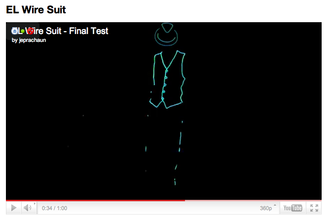 MITERS Project. Just bought a kit from ThatsCoolWire.com for $40! Cool halloween idea…
{kind=link}
{kind=link}
RGB LED Light Chain
- Super cool! Not sure what to use them for though…
- They are cuttable every set of 2!
{kind=link}
Hard Drive Clock
- Great tutorial, he uses different LED strips though than Adafruit…analog?
{kind=link}